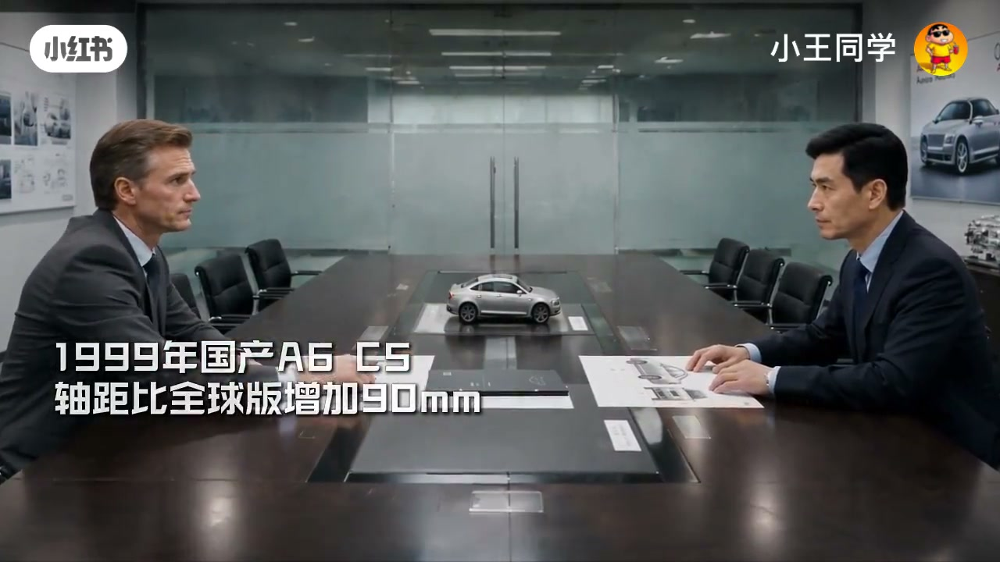
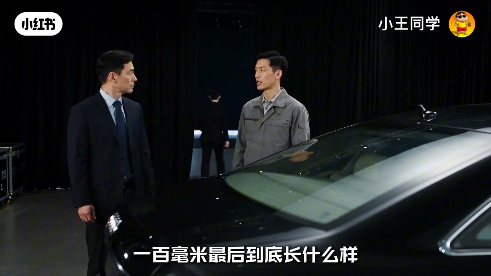

内容要点
「小王同学」用短剧把国产奥迪A6加长史串起来：早在1999年C5轴距就比全球版多90毫米；到2005年C6又加长100毫米，并第一次留下中国消费者熟悉的名字——A6L。后来A4L等长轴距豪华车跟进，当年争论的毫米数，最后变成了市场默认设定。
知识结构
后排「还要加长」「100毫米加进去」：中国市场对后排空间的执念被戏剧化。
1999年国产A6 C5轴距已比全球版+90mm；加长不是从C6才开始。
2005年C6再加100mm，并首次命名A6L；长轴距从工程选项变成品牌符号。
A4L等跟进；争论的是100毫米，留下的是针对中国市场的长轴距常态。
中国豪华车「L」不只是后排多坐一点，而是把本地需求写进车名与产品线——毫米数是表象，命名与跟进才是路径依赖。
00:00-00:50后排空间：把100毫米当成任务
开场像会议室施压：有人坐在后面嫌不够，直接点名「你们还要加长」「100毫米加进去」。短片用夸张语气，把「中国买家盯后排」从市场调研变成戏剧冲突。
角色一边准备上台，一边心里嘀咕：真到台上反而怕哪儿没看见——暗示加长决策要在展示与工程细节之间反复核对。

00:50-02:20加长不是从C6才开始：C5已+90mm
旁白纠偏常见误解：奥迪第一次为中国加长A6，并不是从C6开始。早在1999年，国产A6 C5的轴距就已经比全球版增加90毫米。
到了2005年的C6，奥迪没有把这条路收回去，反而又把中国版加长了100毫米。画面里伪装原型车与西装评审并置，强调这是正式产品战略，不是临时改款。
02:20-03:56名字变成A6L，长轴距成为默认答案
更关键的是命名：从这一代起，它第一次有了后来中国消费者无比熟悉的名字——A6L。旁白说，后来A4也有了A4L，越来越多专门针对中国市场的长轴距车型出现在豪华车市场。
收束句很清楚：当年争论的只是A6要不要再多100毫米；可最后留下来的，却不只是这100毫米——而是「中国加长版」成为豪华车竞争的标配叙事。

完整转录（41段）
以下文本由 Whisper medium 模型自动转录，可能存在少量识别误差，已尽可能修正。
你们还要加长
坐后面
100毫加进去
. � � � � � � �
2009
真到上台了
反而怕哪儿没看见
前几年
我们只是想把A6的后排
做大一点
现在连名字都改了
A6L
准备上场
怎么了
没什么
就是想看看这100毫米
最后到底长什么样
2005年4月
全新国产奥迪A6L正式上市
其实
奥迪第一次为中国加长A6
并不是从C6开始
早在1999年
国产A6C5的轴距
就已经比全球版增加了90毫米
但到了2005年的C6
奥迪没有把这条路收回去
反而又把中国版加长了100毫米
更重要的是
从这一代开始
它第一次有了一个
后来中国消费者无比熟悉的名字
A6L
后来A4也有了A4L
越来越多
专门针对中国市场的长轴距车型
开始出现在豪华车市场
当年争论的
只是A6要不要再多100毫米
可最后留下来的
却不只是这100毫米